Chris Martin, the 1998 world champion, recounts in detail and with ample video footage the events of the WDC 2016 top board that would crown the 2016 World Champion. Be patient, the videos may take their time to load. You can browse through the maps for the whole game history either by using the toggles below or by clicking this PDF file link, which will open in a different tab.
Toggle:
In which each player chooses his country in orderly fashion.
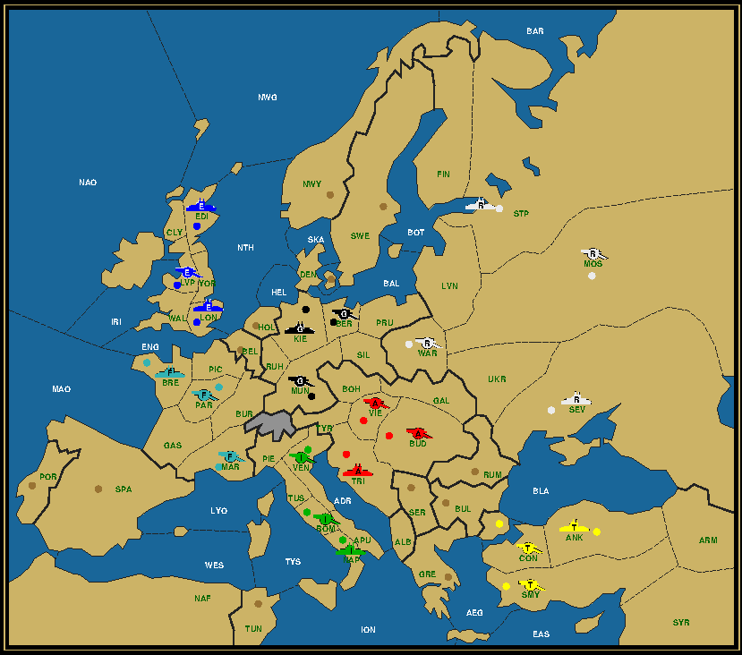
In which players gauge their opponents for the first time and Peter Yeargin (Austria) does some seed planting.
In which Chris Brand (Italy) has to explain the bounce on Trieste to Peter Yeargin (Austria) and no one and everyone wants Belgium.
In which Nathan Barnes (France) and Adam Silverman (England) waffle over the Channel, while Andrew Goff (Russia) plants a bomb.
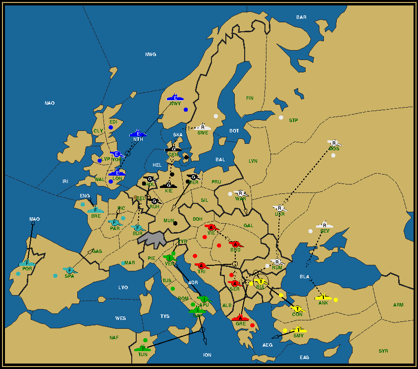

In which Peter Yeargin (Austria) creates enough confusion to weather out a botched attack from all three sides.
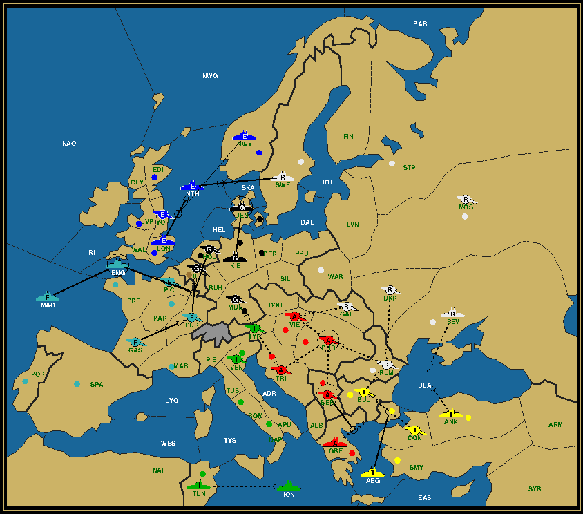
In which Andrew Goff (Russia) tries to reestablish trust with Peter Yeargin (Austria) by letting him dictate his orders.

In which Doug Moore (Germany) tries to talk Adam Silverman (England) out of Denmark by invoking the curse of the puppet master and a first misadjudication happens in the Balkans.
In which Peter Yeargin (Austria) plays the AIR card and Nathan Barnes (France) sells out Adam Silverman (England) over Holland.

In which what was planted in Fall gets reapt in Fall.
In which Chris Brand (Italy) finally resolves to take up Dave Maletsky (Turkey) on his offer, incidentally breaking the Black Sea deadlock.
In which Nathan Barnes (France) reaches super power status.
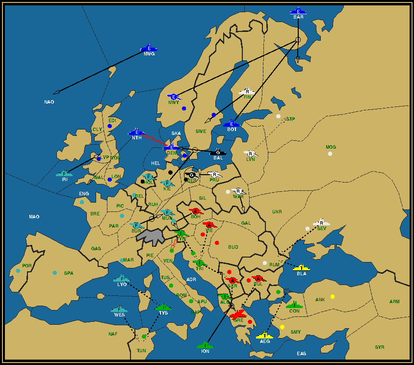
In which tactics take the upperhand over strategy in the player negotiations.
In which the AIR is back on to stop Nathan Barnes (France).
In which the clock surprises a lot of people.
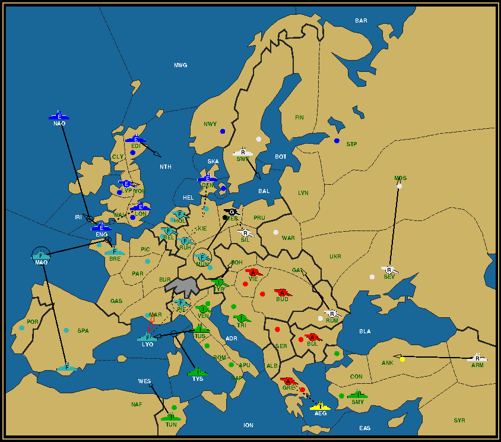
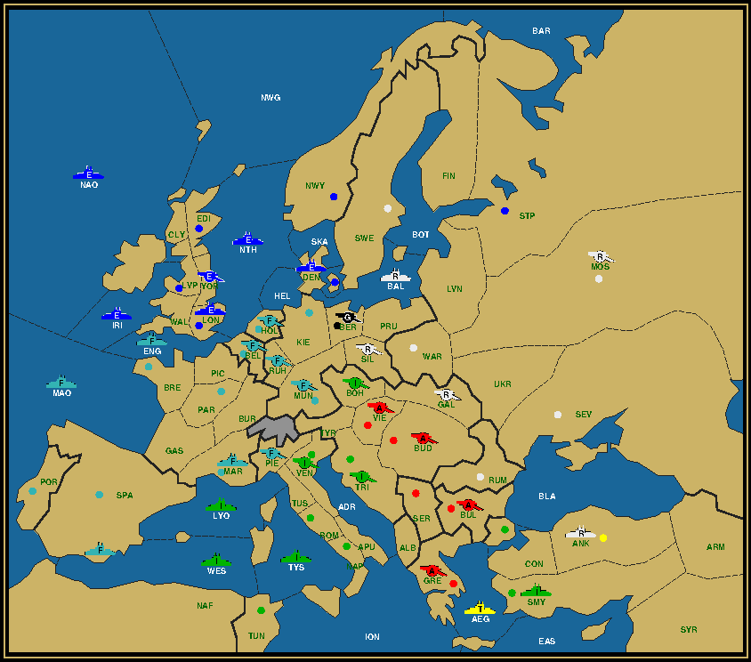
In which Dave Maletsky (Turkey) is the first to pack his bags.
In which Nathan Barnes (France) threatens to throw the game to Chris Brand (Italy) if Adam Silverman (England) doesn't back off.
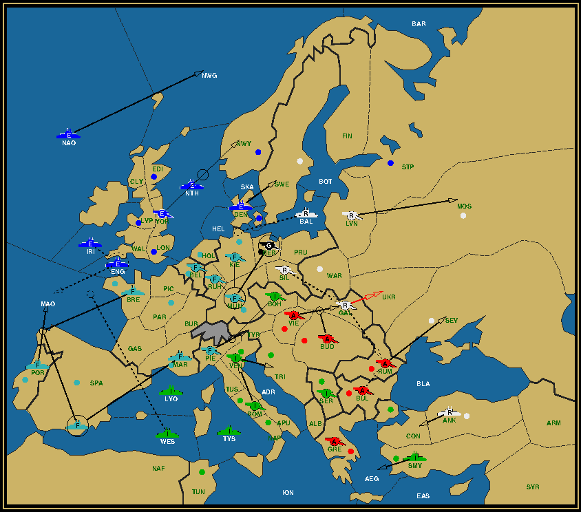
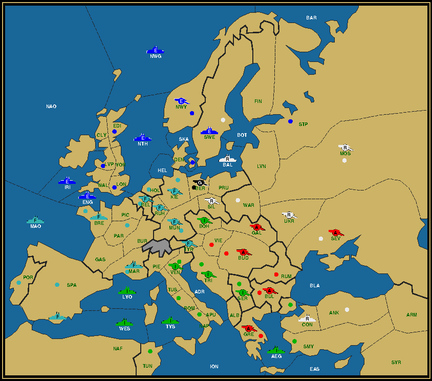
In which Nathan Barnes (France) feigns anger towards Adam Silverman (England), but gets held up for an interview when he should have been writing his orders.
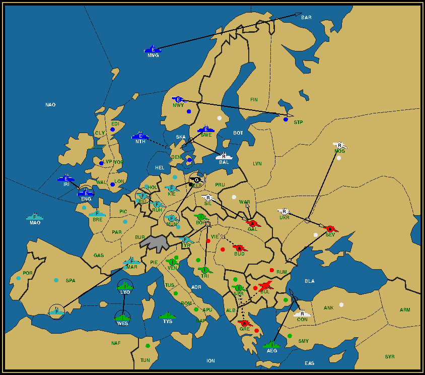
In which technical problems temporarily obstruct recording, while the players continue off-screen, leaving us with nothing but the recorded orders for the next three seasons.


In which Peter Yeargin (Austria) finds an ally in Nathan Barnes (France), but misses a chance to whack Andrew Goff (Russia) out of Moscow.
In which Adam Silverman (England), still off-screen, messes up his convoy to Denmark by bouncing with his Swedish fleet.
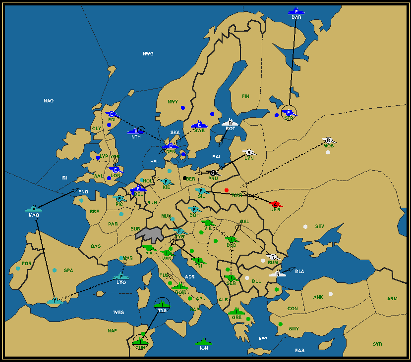
In which the video starts again, just in time to see Doug Moore (Germany) and Peter Yeargin (Austria) bow out, while Chris Brand (Italy) braces himself to maintain his lead until Kingdom comes.
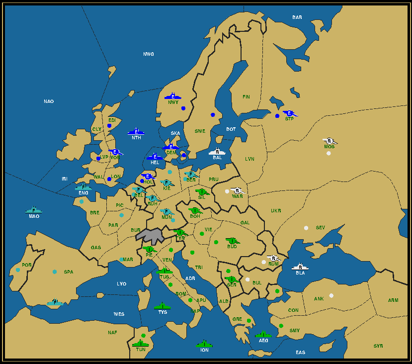
That's it for now, in anticipation of the promised wrap-up video.
|